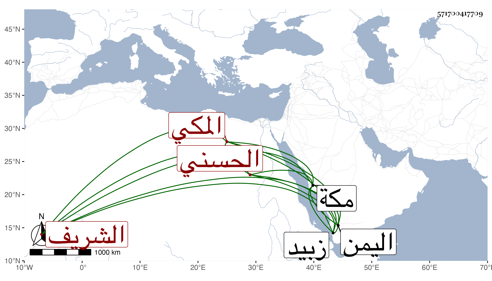

0902Sakhawi.DawLamic.ITO20230111-ara1.EIS1600.571700417709
Biography ID: 571700417709
أحمد بن حسن بن عجلان بن رميثة واسم رميثة منجد بن أبي نمى محمد بن أبي سعد حسن بن علي بن قتادة بن إدريس بن مطاعن الشريف الحسني المكي . نشأ بمكة وأشركه أبوه مع أخيه بركات في إمرتها سنة إحدى عشرة وثمانمائة وتكرر له ذلك وبعد موت أبيهما توجه إلى زبيد من اليمن مفارقا لأخيه المذكور فمات هناك في سنة اثنتين وأربعين . أرخه ابن فهد .
